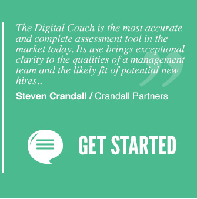

Your employees are your most valuable assets. Don't waste months or even years with mediocre fits. Find out before you hire them whether they'll fit and why. Utilizing dynamic psychology that renders Trait tests inferior, the Digital Couch™ determines the actual strengths and limitations for any candidate or employee in your company. A proven tool for top companies for over 25 years, Digital Couch's proprietary technology offers key information that no interviewing process can. From HR Departments of large companies to founders of funded start-ups, the Digital Couch™ is an essential tool for candidate or employee evaluations. |
 |